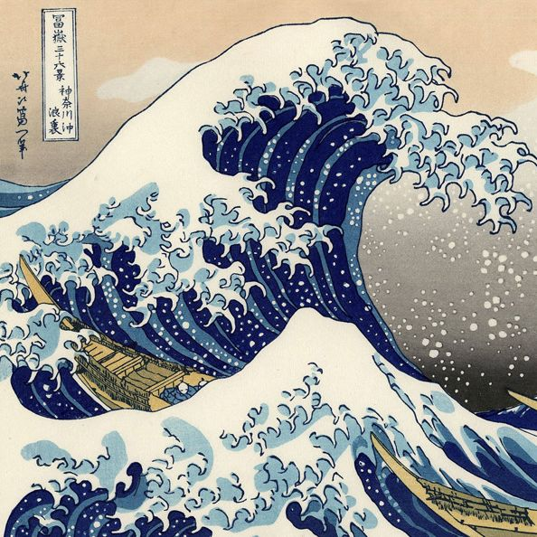

日本の美を巡る、芸術の旅。An Artistic Exploration of Japan's Beauty.
日本の独自の美学と創造力が、国際的な芸術コミュニティで熱狂的な支持を受けています。
伝統と革新の融合、精巧な工芸品、そして現代のアーティストたちの魅力的な表現が、世界中の人々を魅了し、感銘を与えています。
日本の芸術が新たな視点や感動を提供し、文化を通じて国際的なつながりを築いています。
日本芸術の巨匠
葛飾北斎
葛飾北斎（Katsushika Hokusai）は、19世紀の日本の浮世絵師です。
彼は「富嶽三十六景」（Thirty-Six Views of Mount Fuji）といった作品で特に有名で、その中に収められた「神奈川沖浪裏」（The Great Wave off Kanagawa）は、世界的に有名なアート作品として知られています。
北斎は自然の美しさと風景を魅力的に描写し、その作品は日本の文化と美意識に大きな影響を与えました。

当ウェブサイトは、優れたコンテンツを提供するためにスポンサーからの協力を受けています。